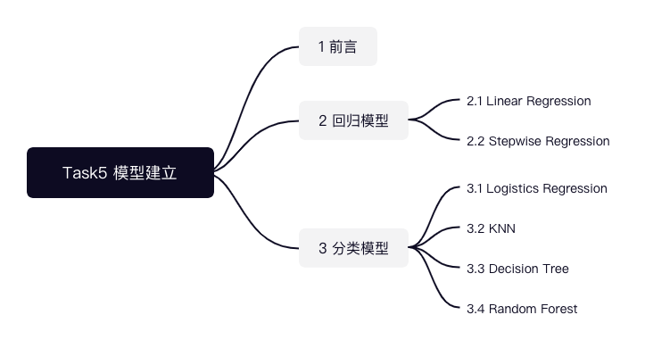
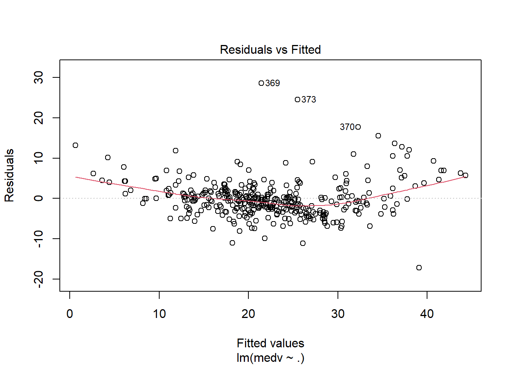
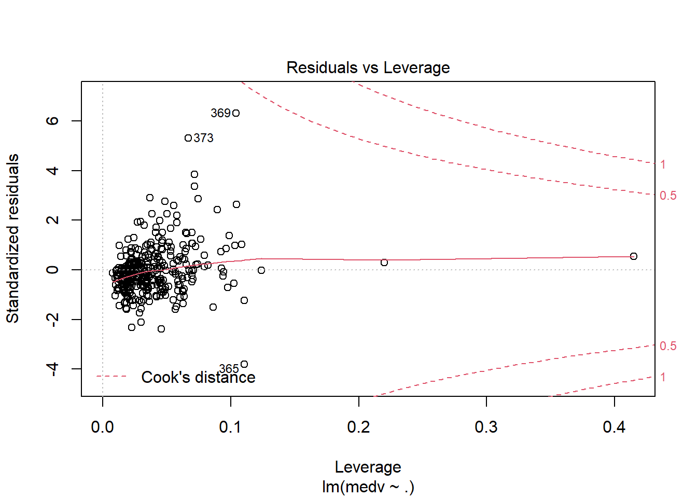
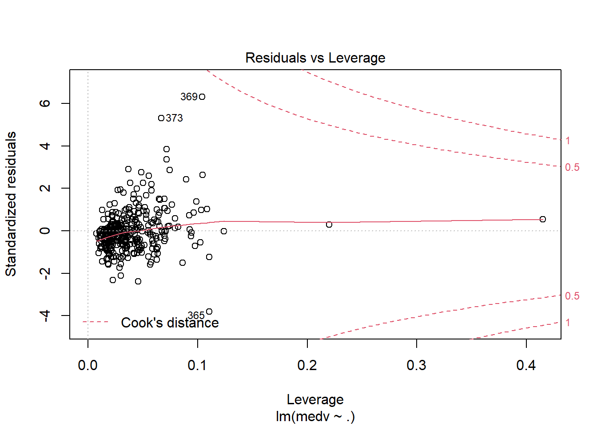
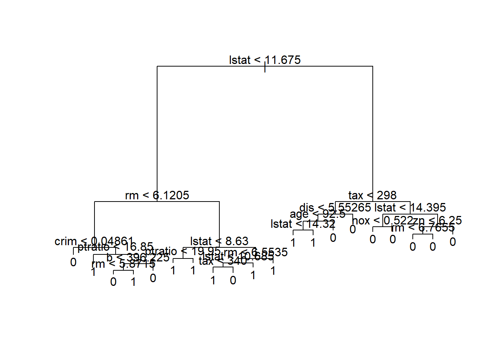

第 5 章 模型

Task05共计3个知识点，预计需学习2-3小时，请安排好学习任务。
5.1 前言
为了帮助大家更好的使用R语言进行建模分析，本章节将借助波士顿房价数据集来展示常见的模型。本章节学习的目的是帮助大家了解模型的适用范围以及如何建模，不会对模型的底层原理进行深入的研究。并且迫于时间和精力有限，本章节仅介绍部分模型的实现。
回归模型： 回归模型是一种有监督的、预测性的建模技术，它研究的是因变量和自变量之间的关系。
分类模型： 分类模型也是一种有监督的机器学习模型。与回归模型不同的是，其标签(因变量)通常是有限个数的定类变量。最常见的是二分类模型。
我们主要使用波士顿房价数据集来实现各种模型。因此我们使用2021作为种子值生成70%的数据作为训练集，其余数据作为测试集。下面展示来各个数据集的大小。
# 导入BostonHousing数据
library(mlbench)
data(BostonHousing)
# 设置种子值，方便复现
set.seed(2021)
# 生成训练集的索引，用来划分训练集和测试集
train_index <- sample(dim(BostonHousing)[1], 0.7 * dim(BostonHousing)[1])
BostonHousingTrain <- BostonHousing[train_index, ]
BostonHousingTest <- BostonHousing[-train_index, ]
# 查看数据集的size
dim(BostonHousing)## [1] 506 14dim(BostonHousingTrain)## [1] 354 14dim(BostonHousingTest)## [1] 152 14# 查看数据集包含的变量名称
names(BostonHousing)## [1] "crim" "zn" "indus" "chas" "nox" "rm" "age"
## [8] "dis" "rad" "tax" "ptratio" "b" "lstat" "medv"##回归模型 回归模型有很多主要有Linear Regression、Logistic Regression、Polynomial Regression、Stepwise Regression、Ridge Regression、Lasso Regression、ElasticNet等。
本部分主要介绍有Linear Regression、以及Stepwise Regression三种回归模型的实现。
5.1.1 Linear Regression
多元线性回归是一种最为基础的回归模型，其使用多个自变量和一个因变量利用OLS完成模型训练。下面我们将使用medv作为因变量，剩余变量作为自变量构建模型。
多元线性回归模型使用lm()命令, 其中medv~.是回归公式，data=BostonHousingTrain是回归数据。对回归公式的构建进行一些补充，~左侧表示因变量，~右侧表示自变量，多个自变量使用+依次叠加。这里右侧使用了.，该符号的含义是除左侧变量外所有的变量。因此，medv~.等价于medv~crim + zn + indus + chas + nox + rm + age + dis + rad + tax + ptratio + b + medv。
# 构建模型，medv~.表示回归方程
lr_model <- lm(medv ~ ., data = BostonHousingTrain)
# summary输出模型汇总
summary(lr_model)##
## Call:
## lm(formula = medv ~ ., data = BostonHousingTrain)
##
## Residuals:
## Min 1Q Median 3Q Max
## -17.1929 -2.6567 -0.3854 1.6261 28.5425
##
## Coefficients:
## Estimate Std. Error t value Pr(>|t|)
## (Intercept) 28.279554 6.464743 4.374 1.62e-05 ***
## crim -0.066574 0.051496 -1.293 0.196958
## zn 0.031466 0.016525 1.904 0.057733 .
## indus 0.046583 0.069009 0.675 0.500115
## chas1 3.372501 1.065312 3.166 0.001687 **
## nox -14.103937 4.498414 -3.135 0.001866 **
## rm 4.512687 0.547845 8.237 3.85e-15 ***
## age -0.010015 0.016016 -0.625 0.532197
## dis -1.259008 0.245311 -5.132 4.82e-07 ***
## rad 0.263841 0.077147 3.420 0.000702 ***
## tax -0.012026 0.004176 -2.880 0.004235 **
## ptratio -1.008997 0.160048 -6.304 8.99e-10 ***
## b 0.014361 0.003406 4.217 3.18e-05 ***
## lstat -0.466948 0.062026 -7.528 4.66e-13 ***
## ---
## Signif. codes: 0 '***' 0.001 '**' 0.01 '*' 0.05 '.' 0.1 ' ' 1
##
## Residual standard error: 4.776 on 340 degrees of freedom
## Multiple R-squared: 0.7299, Adjusted R-squared: 0.7196
## F-statistic: 70.67 on 13 and 340 DF, p-value: < 2.2e-16运用plot命令对模型进行诊断，各图含义参考 https://www.cnblogs.com/lafengdatascientist/p/5554167.html
plot(lr_model)
 

predict命令能够基于已经训练好的模型进行预测。
# 根据模型对新数据进行预测
BostonHousingTest$lr_pred <- predict(lr_model, newdata = BostonHousingTest)5.1.2 Stepwise Regression
利用逐步回归分析可以对模型中的变量进行优化。R语言中的step()命令,是以AIC信息统计量为准则，通过选择最小的AIC信息统计量来达到提出或添加变量的目的。
对于逐步回归，一般有前向、后向、双向等逐步方式。本部分将基于已经实现的lr_model进行双向逐步回归。前向和后向回归只需要更改step()命令行中的direstion参数即可。具体内容参照 https://blog.csdn.net/qq_38204302/article/details/86567356
# both逐步回归
step_model <- step(lr_model, direction = "both")## Start: AIC=1120.78
## medv ~ crim + zn + indus + chas + nox + rm + age + dis + rad +
## tax + ptratio + b + lstat
##
## Df Sum of Sq RSS AIC
## - age 1 8.92 7765.1 1119.2
## - indus 1 10.39 7766.6 1119.3
## - crim 1 38.13 7794.3 1120.5
## <none> 7756.2 1120.8
## - zn 1 82.71 7838.9 1122.5
## - tax 1 189.16 7945.4 1127.3
## - nox 1 224.25 7980.5 1128.9
## - chas 1 228.62 7984.8 1129.1
## - rad 1 266.82 8023.0 1130.8
## - b 1 405.60 8161.8 1136.8
## - dis 1 600.89 8357.1 1145.2
## - ptratio 1 906.67 8662.9 1157.9
## - lstat 1 1292.88 9049.1 1173.4
## - rm 1 1547.84 9304.0 1183.2
##
## Step: AIC=1119.19
## medv ~ crim + zn + indus + chas + nox + rm + dis + rad + tax +
## ptratio + b + lstat
##
## Df Sum of Sq RSS AIC
## - indus 1 10.22 7775.3 1117.7
## - crim 1 39.31 7804.4 1119.0
## <none> 7765.1 1119.2
## + age 1 8.92 7756.2 1120.8
## - zn 1 92.34 7857.5 1121.4
## - tax 1 193.70 7958.8 1125.9
## - chas 1 225.98 7991.1 1127.3
## - nox 1 261.86 8027.0 1128.9
## - rad 1 278.77 8043.9 1129.7
## - b 1 398.83 8164.0 1134.9
## - dis 1 613.30 8378.4 1144.1
## - ptratio 1 916.06 8681.2 1156.7
## - lstat 1 1546.55 9311.7 1181.5
## - rm 1 1571.42 9336.5 1182.4
##
## Step: AIC=1117.65
## medv ~ crim + zn + chas + nox + rm + dis + rad + tax + ptratio +
## b + lstat
##
## Df Sum of Sq RSS AIC
## - crim 1 41.19 7816.5 1117.5
## <none> 7775.3 1117.7
## + indus 1 10.22 7765.1 1119.2
## + age 1 8.74 7766.6 1119.3
## - zn 1 88.58 7863.9 1119.7
## - tax 1 189.88 7965.2 1124.2
## - chas 1 231.63 8007.0 1126.0
## - nox 1 252.32 8027.7 1127.0
## - rad 1 269.59 8044.9 1127.7
## - b 1 395.78 8171.1 1133.2
## - dis 1 706.93 8482.3 1146.5
## - ptratio 1 906.25 8681.6 1154.7
## - lstat 1 1537.69 9313.0 1179.5
## - rm 1 1561.38 9336.7 1180.4
##
## Step: AIC=1117.52
## medv ~ zn + chas + nox + rm + dis + rad + tax + ptratio + b +
## lstat
##
## Df Sum of Sq RSS AIC
## <none> 7816.5 1117.5
## + crim 1 41.19 7775.3 1117.7
## + indus 1 12.10 7804.4 1119.0
## - zn 1 76.92 7893.5 1119.0
## + age 1 9.92 7806.6 1119.1
## - tax 1 182.40 7998.9 1123.7
## - rad 1 228.86 8045.4 1125.7
## - nox 1 236.90 8053.4 1126.1
## - chas 1 240.06 8056.6 1126.2
## - b 1 514.43 8331.0 1138.1
## - dis 1 673.74 8490.3 1144.8
## - ptratio 1 893.27 8709.8 1153.8
## - lstat 1 1589.98 9406.5 1181.1
## - rm 1 1636.60 9453.1 1182.8summary(step_model)##
## Call:
## lm(formula = medv ~ zn + chas + nox + rm + dis + rad + tax +
## ptratio + b + lstat, data = BostonHousingTrain)
##
## Residuals:
## Min 1Q Median 3Q Max
## -16.8955 -2.6773 -0.4005 1.6707 28.5842
##
## Coefficients:
## Estimate Std. Error t value Pr(>|t|)
## (Intercept) 27.001770 6.354437 4.249 2.77e-05 ***
## zn 0.029797 0.016219 1.837 0.06705 .
## chas1 3.446516 1.061891 3.246 0.00129 **
## nox -13.578105 4.211269 -3.224 0.00138 **
## rm 4.491255 0.529976 8.474 7.07e-16 ***
## dis -1.213451 0.223170 -5.437 1.03e-07 ***
## rad 0.220392 0.069546 3.169 0.00167 **
## tax -0.010818 0.003824 -2.829 0.00494 **
## ptratio -0.991885 0.158427 -6.261 1.14e-09 ***
## b 0.015446 0.003251 4.751 2.98e-06 ***
## lstat -0.482234 0.057733 -8.353 1.67e-15 ***
## ---
## Signif. codes: 0 '***' 0.001 '**' 0.01 '*' 0.05 '.' 0.1 ' ' 1
##
## Residual standard error: 4.774 on 343 degrees of freedom
## Multiple R-squared: 0.7278, Adjusted R-squared: 0.7199
## F-statistic: 91.71 on 10 and 343 DF, p-value: < 2.2e-16对于分类模型还有较为常用的Lasso Regression 和 Ridge Regression，我们将会在进阶教程中来更加具体的讲解模型知识。
5.2 分类模型
在进行分类模型前，我们需要构建分类标签。我们使用medv的中位数进行划分，其中1表示高房价，0表示低房价。通过这样的转化将原本的数值型变量转化为二元标签。并使用相同的种子值划分测试集和训练集。
# 将连续变量转化成二分类变量
BostonHousing$medv <- as.factor(ifelse(BostonHousing$medv > median(BostonHousing$medv), 1, 0))
# 查看两种变量类别的数量
summary(BostonHousing$medv)## 0 1
## 256 250# 使用相同的种子值，复现训练集合测试集的划分
set.seed(2021)
train_index <- sample(dim(BostonHousing)[1], 0.7 * dim(BostonHousing)[1])
BostonHousingTrain <- BostonHousing[train_index, ]
BostonHousingTest <- BostonHousing[-train_index, ]同时引入两个计算函数，用来计算AUC指标值。
# 引入auc计算函数
library("ROCR")
calcAUC <- function(predcol, outcol) {
perf <- performance(prediction(predcol, outcol == 1), "auc")
as.numeric(perf@y.values)
}5.2.1 Logistics Regression
逻辑回归是一种广义的线性回归分析模型，利用sigmode将线性回归结果转化成概率的形式。下面展示了利用glm()构建逻辑回归的过程。通过计算，训练集上的auc取值为0.9554211，测试集上的auc取值为0.9506969，说明模型效果整体不错。
# 逻辑回归模型构建
lr_model <- glm(medv ~ ., data = BostonHousingTrain, family = binomial(link = "logit"))
summary(lr_model)##
## Call:
## glm(formula = medv ~ ., family = binomial(link = "logit"), data = BostonHousingTrain)
##
## Deviance Residuals:
## Min 1Q Median 3Q Max
## -2.00065 -0.34945 -0.01094 0.24116 3.00080
##
## Coefficients:
## Estimate Std. Error z value Pr(>|z|)
## (Intercept) 4.641164 4.937497 0.940 0.347226
## crim -0.053419 0.096982 -0.551 0.581760
## zn 0.005680 0.015218 0.373 0.708951
## indus 0.045677 0.048167 0.948 0.342973
## chas1 1.634949 0.798937 2.046 0.040717 *
## nox -6.916586 3.286514 -2.105 0.035332 *
## rm 2.876778 0.651573 4.415 1.01e-05 ***
## age -0.034146 0.013493 -2.531 0.011383 *
## dis -0.696695 0.209391 -3.327 0.000877 ***
## rad 0.220168 0.074211 2.967 0.003009 **
## tax -0.009724 0.003446 -2.822 0.004769 **
## ptratio -0.611081 0.132894 -4.598 4.26e-06 ***
## b 0.006135 0.003830 1.602 0.109159
## lstat -0.267857 0.064765 -4.136 3.54e-05 ***
## ---
## Signif. codes: 0 '***' 0.001 '**' 0.01 '*' 0.05 '.' 0.1 ' ' 1
##
## (Dispersion parameter for binomial family taken to be 1)
##
## Null deviance: 489.83 on 353 degrees of freedom
## Residual deviance: 187.85 on 340 degrees of freedom
## AIC: 215.85
##
## Number of Fisher Scoring iterations: 7# 分别对训练集和测试集进行预测
lr_pred_train <- predict(lr_model, newdata = BostonHousingTrain, type = "response")
lr_pred_test <- predict(lr_model, newdata = BostonHousingTest, type = "response")
# 计算训练集和测试集的auc
calcAUC(lr_pred_train, BostonHousingTrain$medv)## [1] 0.9554211calcAUC(lr_pred_test, BostonHousingTest$medv)## [1] 0.95069695.2.2 KNN
KNN模型是一种简单易懂、可以用于分类和回归的模型。其中 K 表示在新样本点附近(距离)选取 K 个样本数据，通过在 K 个样本进行投票来判断新增样本的类型。
KNN模型较难的一点是确定超参数K，目前有一些指标和经验方法帮助确定最优K的取值。这部分内容会在后续进行讲解，这里使用k=25进行建模。KNN模型在测试集上的auc值为0.8686411，相比于逻辑回归效果较差。
# 导入knn模型的包
library(kknn)
# 构建knn模型
knn <- kknn(medv ~ ., BostonHousingTrain, BostonHousingTest, k = 25)
# 预测并计算测试集上的auc取值
knn_pred_test <- predict(knn, newdata = BostonHousingTest)
calcAUC(as.numeric(knn_pred_test), BostonHousingTest$medv)## [1] 0.8757845.2.3 Decision Tree
决策树是一种基于树模型进行划分的分类模型，通过一系列if then决策规则的集合，将特征空间划分成有限个不相交的子区域，对于落在相同子区域的样本，决策树模型给出相同的预测值。下面构建了决策树的分类模型
# 导入包
library(tree)
# 构建决策树模型函数，medv~.是决策树公式，用来表明变量。
# summary输出模型汇总信息
dt_model <- tree(medv ~ ., BostonHousingTrain)
summary(dt_model)##
## Classification tree:
## tree(formula = medv ~ ., data = BostonHousingTrain)
## Variables actually used in tree construction:
## [1] "lstat" "rm" "crim" "ptratio" "b" "tax" "dis"
## [8] "age" "nox" "zn"
## Number of terminal nodes: 20
## Residual mean deviance: 0.2984 = 99.66 / 334
## Misclassification error rate: 0.07062 = 25 / 354# plot可以对树模型进行绘制，但可能会出现书分支过多的情况。
plot(dt_model)
text(dt_model)
在构建决策树模型的基础上，分别对训练集和测试集进行预测并计算auc取值。该模型在训练集上的auc取值为0.9281874，在测试集上的auc取值为0.8789199。训练集和测试集间存在抖动，说明该模型可能出现过拟合。我们需要引入剪枝的操作来降低模型的过拟合，这部分供同学们自学。
# 预测
dt_pred_train <- predict(dt_model, newdata = BostonHousingTrain, type = "class")
dt_pred_test <- predict(dt_model, newdata = BostonHousingTest, type = "class")
# 计算auc取值
calcAUC(as.numeric(dt_pred_train), BostonHousingTrain$medv)## [1] 0.9308756calcAUC(as.numeric(dt_pred_test), BostonHousingTest$medv)## [1] 0.87891995.2.4 Random Forest
随机森林是一个包含多个决策树的分类器，可以用于分类和回归问题。在解决分类问题是，其输出的类别是由个别树输出的类别的众数而定。相比于单树模型，随机森林具有更好地泛化能力。
使用randomForest()构建模型的过程中，可以通过ntree设定随机森林中包含的决策树数量。由于随机森林是对样本和变量的随机，因此可以通过important展示变量的重要性排序。通过模型预测，随机森林模型在训练集上的auc为0.9615975，在测试集上的auc为0.9247387。
# 导入随机森林包
library(randomForest)
# 随机森林模型
rf_model <- randomForest(medv ~ ., BostonHousingTrain, ntree = 100, nodesize = 10, importance = T)
# 展示模型变量的重要性
importance(rf_model)## 0 1 MeanDecreaseAccuracy MeanDecreaseGini
## crim 3.0460631 1.5455430 3.9486776 5.762997
## zn 3.1035729 1.5721594 3.6238915 1.886801
## indus 3.8338867 1.4335357 4.6616469 7.176498
## chas 1.6703290 -1.5235785 0.7998773 1.100619
## nox 4.6899935 4.2616418 6.3944503 16.005287
## rm 11.0161057 10.2260377 14.5799077 24.681409
## age 5.6799908 3.3897131 6.9069090 9.107270
## dis 4.2225512 3.8567841 6.1001670 8.419924
## rad 0.9290789 -0.3819842 0.8369308 1.449089
## tax 1.1409763 7.2597262 7.5416998 8.688504
## ptratio 3.4528462 5.8912306 6.5636512 11.890037
## b -0.4174669 4.4680208 3.3717663 3.990056
## lstat 14.5324793 12.5910741 18.7108835 44.289292# 预测
rf_pred_train <- predict(rf_model, newdata = BostonHousingTrain, type = "class")
rf_pred_test <- predict(rf_model, newdata = BostonHousingTest, type = "class")
# 计算auc取值
calcAUC(as.numeric(rf_pred_train), BostonHousingTrain$medv)## [1] 0.9675499calcAUC(as.numeric(rf_pred_test), BostonHousingTest$medv)## [1] 0.9236934思考与练习
本章节仅对模型进行简单介绍，更多详细、复杂的模型将在后面的进阶课程中展开。
学习完本章节，希望你能够尝试一些模型调优工作。如决策树剪枝，如尝试搜索KNN模型中最佳K取值等。
关于Datawhale
Datawhale 是一个专注于数据科学与AI领域的开源组织，汇集了众多领域院校和知名企业的优秀学习者，聚合了一群有开源精神和探索精神的团队成员。Datawhale 以“for the learner，和学习者一起成长”为愿景，鼓励真实地展现自我、开放包容、互信互助、敢于试错和勇于担当。同时 Datawhale 用开源的理念去探索开源内容、开源学习和开源方案，赋能人才培养，助力人才成长，建立起人与人，人与知识，人与企业和人与未来的联结。 本次数据挖掘路径学习，专题知识将在天池分享，详情可关注 Datawhale：